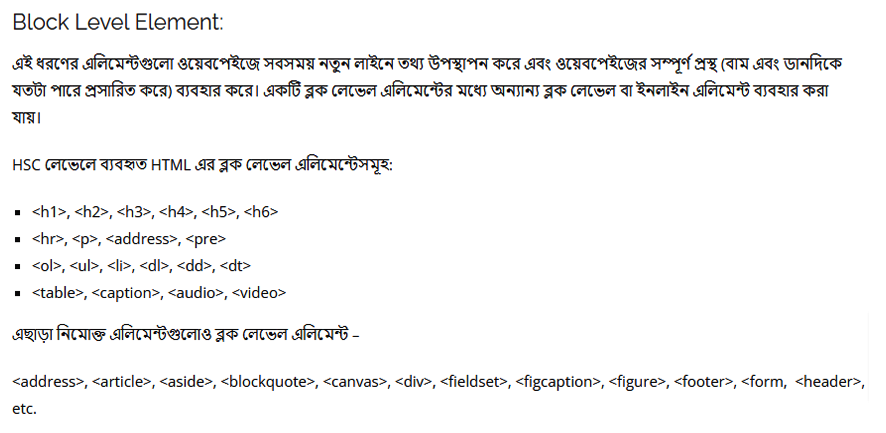
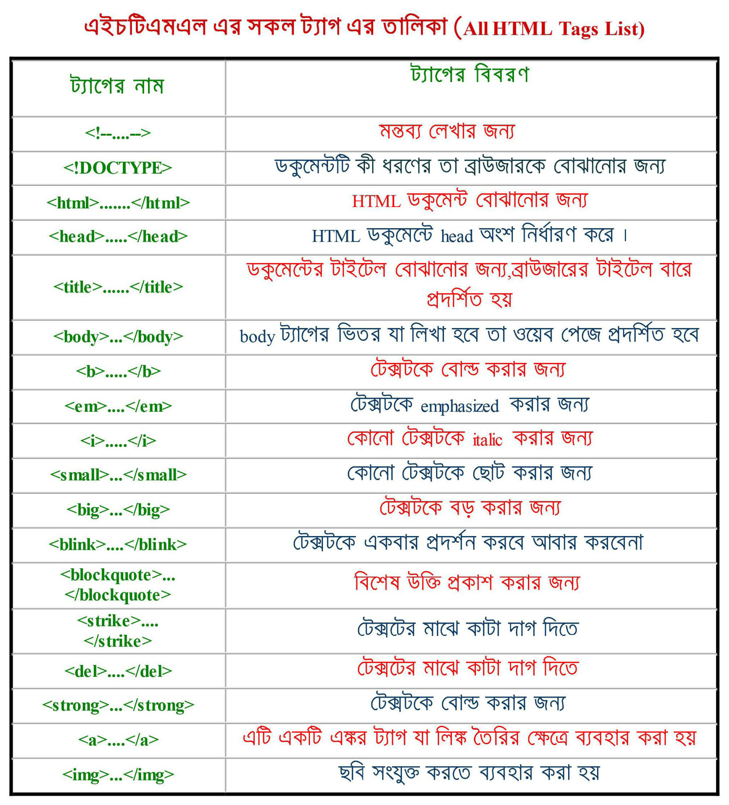

© Sajedul Islam Tushar
তথ্য ও যোগাযোগ প্রযুক্তি
অধ্যায় ০৪: ওয়েব ডিজাইন পরিচিতি ও এইচটিএমএল
ওয়েব ডিজাইন কী?
ওয়েব ডিজাইন হল এমন একটি প্রক্রিয়া যার সাহায্যে ওয়েবপেইজের বাহ্যিক সৌন্দর্য তৈরি করা হয়। অর্থাৎ এই প্রক্রিয়ায় একটি ওয়েবপেইজ বা ওয়েবসাইটের বিভিন্ন লেআউট, রং, গঠন, গ্রাফিক্স এবং ইন্টারেক্টিভ বৈশিষ্ট্যগুলি নির্ধারন করা হয়। ওয়েব ডিজাইনের ক্ষেত্রে বিভিন্ন সফটওয়্যার এবং টুলস ব্যবহার করা হয়। যেমন- Dreamweaver, Photoshop ইত্যাদি।
ইন্টারনেট কী?
ইন্টারনেট হলো পৃথিবীজুড়ে বিস্তৃত অসংখ্য নেটওয়ার্কের সমম্বয়ে গঠিত একটি বিরাট নেটওয়ার্ক ব্যবস্থা। ইন্টারনেটকে যোগাযোগ ব্যবস্থাও বলা হয়। 1969 সালে যুক্তরাষ্ট্রে সর্বপ্রথম আরপানেট (ARPANET-Advanced Research Projects Administration Network) দিয়ে যাত্রা শুরু হয়।
ওয়েব কী? WWW কী?
ইন্টারনেট ব্যবহার করে ওয়েবসাইট থেকে তথ্য নেওয়ার প্রক্রিয়াকে বলা হয় ওয়েব। ওয়েব কে www (World Wide Web) ও বলা হয়। তিনটি প্রযুক্তির সমন্বয়ে ওয়েব গড়ে উঠেছে। যথা-
- প্রথমত, HTML (Hyper Text Markup Language) যার দ্বারা ওয়েবপেইজ তৈরি করা হয়।
- দ্বিতীয়ত, HTTP (Hyper Text Transfer Protocol)
- তৃতীয়ত, Web browser; যে প্রোগ্রাম সার্ভার থেকে ডেটা রিসিভ ও অনুবাদ করে ক্লায়েন্টকে তার ফলাফল প্রদর্শন করে।
টিম বার্নার্স-লি 1989 সালের নভেম্বরের মাঝামাঝি সময়ে একটি হাইপারটেক্সট ট্রান্সফার প্রোটোকল (HTTP) ক্লায়েন্ট এবং সার্ভারের মধ্যে ইন্টারনেটের মাধ্যমে প্রথম সফল যোগাযোগ সম্পন্ন করেছিলেন এবং তাই টিম বার্নার্স-লি www এর জনক হিসাবে বিবেচিত হয়।
ওয়েব পেজ কী?
ওয়েবপেইজ হলো এক ধরনের ওয়েব বা ইলেকট্রনিক ডকুমেন্ট যা সাধারণত HTML(Hypertext Markup Language) এ লেখা হয় এবং বিভিন্ন দেশের সার্ভারে রাখা হয়। যেকোন ইন্টারনেট ব্যবহারকারী ব্রাউজারের সাহায্যে URL এর মাধ্যমে যেকোন জায়গা থেকে এটি দেখতে পারে।
একটি ওয়েবপেইজে টেক্সট, ইমেজ, ফাইল, অডিও, ভিডিও এবং এনিমেশন ইত্যাদি থাকতে পারে। এখন যে পেইজটি পড়ছো, এটিই একটি ওয়েবপেইজের উদাহরণ।
ওয়েবসাইট কী?
একই ডোমেইনের অধীনে সার্ভারে রাখা পরস্পর সংযুক্ত এক বা একধিক ওয়েবপেইজের সমষ্টিকে ওয়েবসাইট বলে। কোন ওয়েবসাইটে প্রবেশ করলে প্রথম যে ওয়েব পেইজটি প্রদর্শিত হয় তাকে হোম পেইজ বলে।
© Sajedul Islam Tushar
ওয়েব পোর্টাল কী?
ওয়েব পোর্টাল হচ্ছে বিশেষভাবে পরিকল্পিত ওয়েবসাইট যা বিভিন্ন গুরুত্বপূর্ণ তথ্যের লিংকের সমাহার।
যেমন – www.bangladesh.gov.bd হচ্ছে একটি ওয়েব পোর্টাল। যেখানে বাংলাদেশের বিভিন্ন গুরুত্বপূর্ণ মন্ত্রণালয়ের তথ্য সংবলিত ওয়েবসাইটের লিংক দেওয়া আছে।
সার্ভার কী / সার্ভার কম্পিউটার কাকে বলে?
সার্ভার হলো এমন একটি কম্পিউটার যা অন্যান্য কম্পিউটারগুলিতে তথ্য সরবরাহ করে। এটি কোনও ল্যান(LAN) অথবা ইন্টারনেটের মাধ্যমে একটি WAN সিস্টেমে ডেটা সরবরাহ করতে পারে। বিভিন্ন ধরণের সার্ভার রয়েছে। যেমন- ওয়েব সার্ভার, মেইল সার্ভার, ফাইল সার্ভার ইত্যাদি। প্রতিটি সার্ভার কম্পিউটার নির্দিস্ট কাজে নির্দিষ্ট সফটওয়্যার চালায়।
উদাহরণস্বরূপ, একটি ওয়েব সার্ভার Apache বা Microsoft IIS সফটওয়্যার চালাতে পারে, যা উভয়েই ইন্টারনেটের সাহায্যে ওয়েবসাইটগুলোতে অ্যাক্সেস দেয়। একটি মেইল সার্ভার Exim বা iMail সফটওয়্যার চালাতে পারে, যা ইমেল প্রেরণ এবং গ্রহণ করার জন্য SMTP(Simple Mail Transfer Protocol) সেবা প্রদান করে। একটি ফাইল সার্ভার, নেটওয়ার্কে ফাইল শেয়ার করার জন্য Samba সফটওয়্যার বা অপারেটিং সিস্টেমের বিল্ট-ইন ফাইল শেয়ারিং সার্ভিস ব্যবহার করতে পারে।
ক্লায়েন্ট কী / ক্লায়েন্ট কম্পিউটার কাকে বলে?
ক্লায়েন্ট হলো এমন একটি কম্পিউটার যা একটি দূরবর্তী কম্পিউটার বা সার্ভারকে সংযুক্ত করে এবং রিসোর্স ব্যবহার করে। ক্লায়েন্ট কম্পিউটারে বিভিন্ন ক্লায়েন্ট সফ্টওয়্যার ব্যবহার করা হয়।
উদাহরণস্বরূপ, ওয়েব ব্রাউজার (Google Chrome , Opera, Firefox, ইত্যাদি) হলো এক ধরণের ক্লায়েন্ট সফ্টওয়্যার যা ওয়েব সার্ভারের সাথে সংযোগ করে এবং ওয়েবপেইজ প্রদর্শন করে থাকে। ই-মেইল ক্লায়েন্ট মেইল সার্ভার থেকে ই-মেইল প্রদর্শন করে।
আপলোড ও ডাউনলোড কী?
যে সফটওয়্যার এর সাহায্যে পৃথিবীর বিভিন্ন দেশের সার্ভারে রাখা পরস্পর সংযুক্ত ওয়েবপেইজগুলো ব্রাউজ করা বা দেখা যায় তাকে ওয়েব ব্রাউজার বলে ।
ব্রাউজার ওয়েবপেইজ এবং ওয়েবসাইটগুলোকে হাইপারটেক্সট ট্রান্সফার প্রোটোকল (HTTP) ব্যবহার করে মানুষের বুঝার উপযোগী করে অনুবাদ করে।
ওয়েব ব্রাউজারের উদাহরণ – Internet Explorer, Google Chrome, Mozilla Firefox, and Apple Safari ইত্যাদি।
পৃথিবীর বিভিন্ন দেশের সার্ভারে রাখা পরস্পর সংযুক্ত ওয়েবপেইজ পরিদর্শন করাকে ওয়েব ব্রাউজিং বলা হয়।
ওয়েব ব্রাউজার এবং সার্চ ইঞ্জিন এক জিনিস নয়, যদিও দুটি প্রায়ই বিভ্রান্ত করে। ব্যবহারকারীর জন্য, সার্চ ইঞ্জিন হলো একটি ওয়েবসাইট। যেমন- google.com যা অন্যান্য ওয়েবসাইটগুলোর সম্পর্কে অনুসন্ধানযোগ্য ডেটা স্টোর করে। তবে কোনও ওয়েবসাইটের সার্ভারের সাথে সংযোগ স্থাপন করতে এবং এর ওয়েবপেইজগুলো প্রদর্শন করতে একজন ব্যবহারকারীর অবশ্যই তার ডিভাইসে একটি ওয়েব ব্রাউজার ইনস্টলড থাকতে হবে।
© Sajedul Islam Tushar
সার্চ ইঞ্জিন কী?
সার্চ ইঞ্জিন হল এমন একটি সফটওয়্যার যা ব্যবহারকারীর দেওয়া কীওয়ার্ড গুলোর জন্য ওয়েবপেইজ অনুসন্ধান করে এবং সেইসব কীওয়ার্ড ধারণকারী ওয়েবপেইজগুলো ফলাফল হিসেবে উপস্থাপন করে। কীওয়ার্ড হলো, ব্যবহারকারী যা লিখে সার্চ করে।
“Archie” সার্চ ইঞ্জিনটিকে প্রথম সার্চ ইঞ্জিন হিসাবে বিবেচনা করা হয়, যা FTP ফাইলগুলি অনুসন্ধান করার জন্য ব্যবহৃত হয়েছিল এবং প্রথম টেক্সট-ভিত্তিক সার্চ ইঞ্জিনটিকে ভেরোনিকা(Veronica) হিসাবে বিবেচনা করা হয়।
বর্তমানে, সর্বাধিক জনপ্রিয় এবং সুপরিচিত সার্চ ইঞ্জিন হলো Google। অন্যান্য জনপ্রিয় সার্চ ইঞ্জিনগুলোর মধ্যে রয়েছে AOL, Ask.com, Baidu, Bing এবং Yahoo ইত্যাদি।
গঠন বৈচিত্রের ওপর ভিত্তি করে ওয়েবসাইটকে সাধারণত দুইভাবে ভাগ করা যায়। যথা-
- স্ট্যাটিক ওয়েবসাইট
- ডাইনামিক ওয়েবসাইট

স্ট্যাটিক ওয়েবসাইট কী?
যে সকল ওয়েবসাইটের তথ্য সাধারণত পরিবর্তন হয় না তাদেরকে স্ট্যাটিক ওয়েবসাইট বলা হয়। স্ট্যাটিক ওয়েবসাইটের সকল ভিজিটর একই তথ্য দেখতে পায়।
স্ট্যাটিক ওয়েবসাইটের তথ্য ওয়েবসাইট চালু অবস্থায় পরিবর্তন করা কঠিন। কারণ এই ধরণের ওয়েবসাইটে কোন এডমিন প্যানেল থাকে না। অর্থাৎ তথ্য যুক্ত, আপডেট এবং ডিলিট করার জন্য কোড পরিবর্তন করতে হয়।
স্ট্যাটিক ওয়েবসাইটে কোনও ব্যবহারকারী একাউন্ট তৈরি করতে পারে না, কোনও মন্তব্য করতে পারে না , কোনও ব্লগ পোস্ট বা কোনও ইন্টারঅ্যাক্টিভিটি নেই। স্ট্যাটিক ওয়েবসাইট তৈরি করার জন্য কোনও প্রোগ্রামিং ভাষার প্রয়োজন হয় না। কারণ এই ধরণের ওয়েবসাইটে কোন ফাংশনালিটি থাকে না।
স্ট্যাটিক ওয়েবসাইট শুধু HTML(Hyper Text Markup Language) এবং CSS(Cascading Style Sheet) দিয়েই তৈরি করা যায়। যদি তথ্যের পরিবর্তন প্রয়োজন না হয়, তখন সাধারণত স্ট্যাটিক ওয়েবসাইট তৈরি করা হয়। যেমনঃ পোর্টফোলিও সাইট।
ডাইনামিক ওয়েবসাইট কী?
যে সকল ওয়েবসাইটের তথ্য সাধারণত পরিবর্তনশীল তাদেরকে ডাইনামিক ওয়েবসাইট বলা হয়। ডাইনামিক ওয়েবসাইটের তথ্য, ভিজিটর, সময়, টাইম জোন, ভিজিটরের মাতৃভাষা এবং অন্যান্য বিষয়গুলোর উপর ভিত্তি করে পরিবর্তন হয়।
ডাইনামিক ওয়েবসাইটের তথ্য ওয়েবসাইট চালু অবস্থায় সহজেই পরিবর্তন করা যায়। কারণ এই ধরণের ওয়েবসাইটে এডমিন বা ইউজার প্যানেল থাকে। অর্থাৎ একজন এডমিন বা ব্যবহারকারী তার প্যানেল থেকে কোন কোড পরিবর্তন না করেই তথ্য যুক্ত, আপডেট এবং ডিলিট করতে পারে।
ডাইনামিক ওয়েবসাইটের ব্যবহারকারী একাউন্ট তৈরি করতে পারে, মন্তব্য করতে পারে, ব্লগ পোস্ট বা ইন্টারঅ্যাক্টিভিটি থাকে। ডাইনামিক ওয়েবসাইট তৈরি করার জন্য প্রোগ্রামিং ভাষার প্রয়োজন হয়।
© Sajedul Islam Tushar
কারণ এই ধরণের ওয়েবসাইটে অনেক ফাংশনালিটি থাকে।
ডাইনামিক ওয়েবসাইট তৈরি করার জন্য HTML,CSS এর সাথে স্ক্রিপ্টিং ভাষা যেমন- PHP(PHP: Hypertext Preprocessor) বা ASP.Net(Active Server Page) বা JSP(Java Servlet Pages) ইত্যাদি এবং এর সাথে ডেটাবেজ যেমন- MySQL বা SQL বা Oracle ইত্যাদি ব্যবহার করা হয়।
যদি প্রতিনিয়ত তথ্যের পরিবর্তন প্রয়োজন হয়, তখন সাধারণত ডাইনামিক ওয়েবসাইট তৈরি করা হয়। যেমনঃ বিভিন্ন নিউজ পোর্টাল(www.prothomalo.com), সামাজিক যোগাযোগ মাধ্যম(www.facebook.com) ইত্যাদি।
স্ট্যাটিক ও ডাইনামিক ওয়েবসাইটের পার্থক্য

আর্কাইভ ওয়েবসাইট:
এই সকল ওয়েবসাইট সাধারণত পুরাতন কিন্তু গুরুত্বপূর্ণ তথ্য ,ছবি, অডিও এবং ভিডিও প্রদর্শন করার জন্য তৈরি করা হয়।
বিজনেস ওয়েবসাইট:
ব্যবসায়িক সেবাদান, প্রচার, প্রসার ইত্যাদি উদ্দেশ্যে এই সকল ওয়েবসাইট তৈরি করা হয়।
ই-কমার্স ওয়েবসাইট:
যে সকল ওয়েবসাইটে পণ্য ক্রয়-বিক্রয় এবং মূল্য পরিশোধ করার ব্যবস্থা থাকে তাদেরকে ই-কমার্স ওয়েবসাইট বলা হয়। যেমন- amazon.com, alibaba.com ইত্যাদি।
সামাজিক যোগাযোগ ওয়েবসাইট:
এই সকল ওয়েবসাইট সাধারণত সামাজিক যোগাযোগের উদ্দেশ্যে তৈরি করা হয়। যেমন- www.facebook.com, www.tweeter.com ইত্যাদি।
ব্লগ ওয়েবসাইট:
যখন কোন ব্যক্তি কোন নির্দিস্ট এক বা একাধিক বিষয়ের উপর লেখা প্রকাশের উদ্দেশ্যে একটি ওয়েবসাইট তৈরি করে, তখন ঐ ওয়েবসাইটকে সাধারণত ব্লগিং সাইট বা ব্লগ ওয়েবসাইট বলা হয়।
নিউজ ওয়েবসাইট:
চলমান সংবাদ বিশ্বের যেকোন প্রান্তে প্রচার করার জন্য যেসকল ওয়েবসাইট তৈরি করা হয় তাদেরকে নিউজ পোর্টাল বলা হয়। যেমন- bbc.com, prothomalo.com ইত্যাদি।
আইপি এড্রেস কী? What is IP address?
IP অ্যাড্রেস এর পূর্নরুপ Internet Protocol অ্যাড্রেস। IP অ্যাড্রেস হলো লজিক্যাল সংখ্যাসূচক অ্যাড্রেস যা টিসিপি/আইপি(TCP/IP)-ভিত্তিক নেটওয়ার্কের প্রতিটি কম্পিউটার, প্রিন্টার, সুইচ, রাউটার বা অন্য যেকোনও ডিভাইসে অ্যাসাইন বা আরোপিত করা হয়।
একটি নেটওয়ার্কের প্রতিটি IP অ্যাড্রেস অদ্বিতীয় যা নেটওয়ার্কের প্রতিটি নোডকে স্বতন্ত্রভাবে সনাক্ত করতে ব্যবহৃত হয়। আইপি অ্যাড্রেসগুলো লজিক্যাল হওয়ায় তারা পরিবর্তন হতে পারে। আইপি অ্যাড্রেসের সংখ্যাগুলো দুই ভাগে বিভক্ত:
- নেটওয়ার্ক অংশঃ এটি নির্দিষ্ট করে যে এই ঠিকানাটি কোন নেটওয়ার্কের অন্তর্ভুক্ত।
- হোস্ট অংশঃ এটি আরও সঠিক অবস্থানটি নির্দেশ করে।
© Sajedul Islam Tushar
আইপি এড্রেস কত প্রকার?
আইপি এড্রেস দুই প্রকারঃ IPV4 এবং IPV6

স্ট্যাটিক এবং ডায়নামিক আইপি এড্রেস
আইপি অ্যাড্রেস দুটি ভিন্ন উপায়ে অ্যাসাইন করা যায়। ডায়নামিকভাবে অ্যাসাইন করা যেতে পারে (তারা স্বয়ংক্রিয়ভাবে পরিবর্তন হতে পারে) বা স্ট্যাটিকভাবে অ্যাসাইন করা যেতে পারে (ম্যানুয়ালি পরিবর্তন করতে হবে)। বেশিরভাগ বাসা-বাড়ির নেটওয়ার্কগুলো ডায়নামিকভাবে অ্যাসাইন করা হয়।
একটি আইপি অ্যাড্রেস স্ট্যাটিক বা ডায়নামিক হতে পারে। একটি স্ট্যাটিক আইপি অ্যাড্রেস কখনও পরিবর্তন হবে না এবং এটি একটি স্থায়ী ইন্টারনেট অ্যাড্রেস। ডায়নামিক আইপি অ্যাড্রেস একটি অস্থায়ী অ্যাড্রেস যা প্রতিটি সময় কম্পিউটার বা ডিভাইস ইন্টারনেট অ্যাক্সেস করার সময় অ্যাসাইন হয়।
ওয়েব এড্রেস কী? URL কী?
প্রতিটি ওয়েবসাইটের একটি সুনির্দিষ্ট ও অদ্বিতীয় অ্যাড্রেস বা ঠিকানা রয়েছে যার সাহায্যে ইন্টারনেটে সংযুক্ত থেকে ওয়েব ব্রাউজারের সাহায্যে যেকোন জায়গা থেকে ঐ ওয়েবসাইটের পেইজগুলো ব্রাউজ করা যায়; সেই ঠিকানাকে ওয়েব অ্যাড্রেস বলে। ওয়েব অ্যাড্রেস URL নামেও পরিচিত। URL অর্থ Universal /Uniform Resource Locator । একটি ওয়েব অ্যাড্রেস বা URL এর কয়েকটি অংশ থাকে।
প্রোটোকল কী?
প্রোটোকল হল কতগুলো নিয়মের সমষ্টি । উপরের URL এ http একটি প্রোটোকল যা HTML ডকুমেন্ট এক্সেস করা বা ওয়েব সার্ভার ও ক্লায়েন্টের মধ্যে ডেটা আদান-প্রদান করে থাকে। কিছু প্রোটোকলের উদাহরণ- HTTP, FTP, TCP, IP, etc.
ডোমেইন নেম কী?
ডোমেইন নেইম হচ্ছে একটি স্বতন্ত্র টেক্সট অ্যাড্রেস যা কোন ওয়েব সার্ভারের আইপি অ্যাড্রেসকে প্রতিনিধিত্ব করে। উদাহরণ স্বরূপ ধরা যাক, www.facebook.com এর পরিবর্তে 31.13.78.35 এই আইপি অ্যাড্রেস এর মাধ্যমেও facebook এর ওয়েবসাইট ব্রাউজ করা যায়। অর্থাৎ www.facebook.com ডোমেইন নেইমটি, আইপি অ্যাড্রেস 31.13.78.35 কে প্রতিনিধিত্ব করছে। মানুষ আইপি অ্যাড্রেস ব্যবহার না করে ডোমেইন নেইম ব্যবহার করে। কারণ আইপি অ্যাড্রেস সংখ্যাবাচক তাই মনে রাখা কষ্টকর কিন্তু ডোমেইন নেইম টেক্সট অ্যাড্রেস তাই মনে রাখা সহজ। এক্ষেত্রে DNS সার্ভার বা Domain Name System সার্ভার এর মাধ্যমে আইপি অ্যাড্রেসকে ডোমেইন নেইমে রূপান্তর করে।
ডোমেইন নেইম ব্যবহার করার আগে অবশ্যই নিবন্ধ করতে হবে। প্রতিটি ডোমেইন নেইম অদ্বিতীয়। কোনও দুটি ওয়েবসাইটে একই ডোমেইন নেইম থাকতে পারে না।
© Sajedul Islam Tushar
Internet Corporation for Assigned Names and Numbers(ICANN) একটি আমেরিকান অলাভজনক সংস্থা যা সারা বিশ্বের ডোমেইন নেইম নিয়ন্ত্রণ করে থাকে।
প্রতিটি ডোমেইন নেইম এর দুটি প্রধান অংশ ও একটি ঐচ্ছিক অংশ থাকে। যথা-
- সেকেন্ড-লেভেল ডোমেইন(SLD)
- টপ-লেভেল ডোমেইন(TLD)
- থার্ড-লেভেল ডোমেইন বা সাব-ডোমেইন (ঐচ্ছিক)
সেকেন্ড-লেভেল ডোমেইনঃ
সেকেন্ড-লেভেল ডোমেইন সাধারণত প্রতিষ্ঠানের নামের সাথে সামঞ্জস্যপূর্ণ থাকে। সেকেন্ড-লেভেল ডোমেইনকে অনেক সময় ডোমেইনও বলা হয়। ডোমেইন নামকরনের ক্ষেত্রে কোন স্পেস ও স্পেশাল ক্যারেক্টার(@, &, %, $, # etc.) ব্যবহার করা যায় না। শুধু বর্ণ ও সংখ্যা ব্যবহার করা যায়। ডোমেইনে ব্যবহৃত বর্ণগুলো কেস সেনসিটিভ নয়।
টপ-লেভেল ডোমেইন কী?
টপ-লেভেল ডোমেইন (TLD) দ্বারা প্রতিষ্ঠানের ধরণ এবং প্রতিষ্ঠানটি কোন দেশের তা বুঝা যায়। TLD এর দুইটি অংশ। যথা- জেনেরিক ডোমেইন ও কান্ট্রি ডোমেইন। জেনেরিক ডোমেইন যা প্রতিষ্ঠানটির ধরণ নির্দেশ করে, কান্ট্রি ডোমেইন ওয়েব অ্যাড্রেস এর একেবারে শেষের অংশ যা প্রতিষ্ঠানটি কোন দেশের তা নির্দেশ করে।
সাব-ডোমেইন (থার্ড-লেভেল ডোমেইন): সাব-ডোমেইন মূল ডোমেইনের অংশ যাকে থার্ড-লেভেল বা তৃতীয় স্তরের ডোমেইনও বলা হয়। একটি ডোমেইন এর সাব-ডোমেইন থাকতেও পারে নাও পারে। একটি ওয়েবসাইটকে বিভিন্ন সেকশনে ভাগ করতে সাব-ডোমেইন ব্যবহৃত হয়। যেমন- www.google.com একটি ডোমেইন যার সাব-ডোমেইন হল maps.google.com, mail.google.com ইত্যাদি। অর্থাৎ google এর maps সেকশনটি আলাদা করতে maps.google.com সাব-ডোমেইন ব্যবহৃত হয় এবং google এর mailসেকশনটি আলাদা করতে mail.google.com সাব-ডোমেইন ব্যবহৃত হয়।
Directory: সার্ভার কম্পিউটারের একটি ফোল্ডার যেখানে ওয়েব পেইজগুলো অবস্থান করে। যেমন- উপরের URL এর ict হলো directory ।
ফাইল নেইম: ওয়েব পেইজের বা ফাইল নেইম। যেমন – উপরের URL এর robotics.html হলো ওয়েব পেইজের বা ফাইল নেইম।
DNS সার্ভার কী?
DNS সার্ভার এর পূর্নরুপ Domain Name System সার্ভার। আমরা যখন ব্রাউজারে কোন ওয়েব অ্যাড্রেস লিখে রিকুয়েস্ট করি, তখন ব্রাউজার প্রথমে ঐ ওয়েব অ্যাড্রেসের জন্য IP অ্যাড্রেস চেয়ে DNS সার্ভারে রিকুয়েস্ট পাঠায়। DNS সার্ভারে সকল ওয়েব অ্যাড্রেসের বিপরিতে IP অ্যাড্রেসগুলো সংরক্ষিত থাকে। তাই DNS সার্ভার ওয়েব অ্যাড্রেসের বিপরিতে IP অ্যাড্রেস ব্রাউজারকে রিটার্ন করে। তারপর ব্রাউজার ঐ IP অ্যাড্রেসের ওয়েব সার্ভারে ওয়েবসাইটের জন্য রিকুয়েস্ট পাঠায় এবং ওয়েবসাইটটি প্রদর্শিত হয়।
© Sajedul Islam Tushar
ওয়েবসাইটের কাঠামো কী?
ওয়েবসাইটের কাঠামো বলতে বুঝায় ওয়েবসাইটের পেইজগুলো কিভাবে একে অপরের সাথে সংযুক্ত থাকবে। যেমনঃ হোম পেইজের সাথে সাব-পেইজগুলো আবার সাব-পেইজগুলো নিজেদের মধ্যে কিভাবে একে অপরের সাথে সংযুক্ত থাকবে ইত্যাদি।
ওয়েবসাইটে একাধিক ওয়েবপেইজ থাকলে পেইজগুলো একে অপরের সাথে সংযুক্ত থাকে। ওয়েবপেইজগুলো তাদের সংযোগের উপর ভিত্তি করে বিভিন্ন নামের হয়ে থাকে। একটি ওয়েবসাইটে সাধারণত তিন ধরণের ওয়েবপেইজ থাকে। যেমন- হোম পেইজ, মূল ধারার পেইজ এবং উপধারার পেইজ।

হোম পেজ কী?
কোন ওয়েবসাইটে প্রবেশ করলে প্রথম যে পেজটি প্রদর্শিত হয় তাকে হোম পেজ বলে। হোম পেজে সাধারণত প্রতিষ্ঠান সম্পর্কে সংক্ষিপ্ত তথ্য, লক্ষ ও উদ্দেশ্য ইত্যাদি উপস্থাপন করা হয় এবং মূল ধারার পেজগুলো মেনুবারে সংযুক্ত করা হয়।হোম পেজের এই মেনুবারকে মেইন সেকশন বা ‘site index’ বলা হয়।
মূল ধারার পেইজঃ মূল ধারার পেইজগুলোতে সাধারণত একটি নির্দিস্ট বিভাগের তথ্য থাকে এবং পেইজগুলো হোম পেইজের মেনুবারে সংযুক্ত থাকে। যেমন- একটি বিশ্ববিদ্যালয়ের ওয়েবসাইটের হোম পেইজের মেনুবারে বিভিন্ন বিভাগের পেইজগুলো সংযুক্ত থাকে। প্রতিটি বিভাগের জন্য পেইজগুলোকে মূল ধারার পেইজ বলা হয়।
উপধারার পেইজঃ উপধারার পেইজগুলোতে একটি নির্দিস্ট বিষয় সম্পর্কে বিস্তারিত তথ্য থাকে এবং পেইজগুলো মূল ধারার পেইজের সাথে সংযুক্ত থাকে। যেমন- একটি বিশ্ববিদ্যালয়ের ওয়েবসাইটের হোম পেইজের মেনুবারে বিভিন্ন বিভাগের পেইজগুলো সংযুক্ত থাকে। প্রতিটি বিভাগের জন্য পেইজগুলোকে মূল ধারার পেইজ বলা যায়। আবার প্রতিটি বিভাগের জন্য ভর্তি তথ্য, সিলেবাস, নোটিশ ইত্যাদির বিস্তারিত তথ্য উপস্থাপনের জন্য পেইজ থাকে। এই পেইজগুলোকে উপধারার পেইজ বলা হয়।
ওয়েবসাইটের বৈশিষ্ট্য অনুসারে ওয়েবসাইটের কাঠামোকে চার ভাগে ভাগ করা যায়। যথাঃ
- লিনিয়ার/ সিকুয়েন্সিয়াল কাঠামো
- ট্রি/হায়ারার্কিক্যাল কাঠামো
- নেটওয়ার্ক/ ওয়েব লিঙ্কড কাঠামো
- হাইব্রিড/ কম্বিনেশনাল কাঠামো
লিনিয়ার / সিকুয়েন্সিয়াল কাঠামো কী?
যখন কোন ওয়েবসাইটের পেইজগুলো একটি নির্দিষ্ট ক্রমানুসারে একে অপরের সাথে সংযুক্ত থাকে তখন ঐ ওয়েবসাইটের কাঠামোকে লিনিয়ার/ সিকুয়েন্স কাঠামো বলে। কোন একটি পেইজের পর কোন পেইজে যাওয়া যাবে তা ওয়েবপেইজের ডিজাইনার ঠিক করে থাকে। পেইজগুলোতে Next, Previous, first ও last ইত্যাদি লিংকের মাধ্যমে Visitor প্রতিটি পেইজ দেখতে পারে।
© Sajedul Islam Tushar
বই, ম্যাগাজিন এবং অন্যান্য সমস্ত মুদ্রণের বিষয়গুলো যদি ওয়েবসাইটের মাধ্যমে পড়ার ব্যবস্থা করা হয় তখন এই ধরণের কাঠামো ব্যবহৃত হয়।
প্রশিক্ষণ বা শিক্ষামূলক ওয়েবসাইটগুলোর জন্য লিনিয়ার কাঠামো সর্বাধিক উপযুক্ত, উদাহরণস্বরূপ, যেখানে ব্যবহারকারী একটি নির্দিষ্ট অগ্রগতি প্রত্যাশা করে। যেমন- একজন শিক্ষার্থী বেসিক কোর্সে যদি পাস করে তাহলে মিড-লেবেল কোর্স করতে পারবে এবং যদি মিড-লেবেল কোর্সে পাস করে তাহলে অ্যাডভান্সড কোর্স করতে পারবে। এই ধরণের সিস্টেমের ক্ষেত্রে লিনিয়ার কাঠামো সর্বাধিক উপযুক্ত।
ট্রি / হায়ারার্কিক্যাল কাঠামো কী?
ওয়েবসাইট কাঠামোগুলোর মধ্যে ট্রি কাঠামো সবচেয়ে সহজ ও জনপ্রিয়। এই কাঠামোতে একটি হোম পেইজ থাকে এবং অন্যান্য পেইজ গুলো হোম পেইজের সাথে যুক্ত থাকে, এদেরকে সাব-পেইজ বলে। সাব-পেইজ গুলোর সাথে আরও অন্যান্য পেইজ যুক্ত থাকে। কাঠামোটি দেখতে ট্রি এর মত বলে এই কাঠামোকে ট্রি কাঠামো বলে। এই ধরণের কাঠামোতে হোম পেইজে মেনু এবং সাব-মেনু তৈরি করা থাকে।
বেশিরভাগ বড় প্রতিষ্ঠানগুলো বহু স্তরযুক্ত ওয়েবসাইট কাঠামো গ্রহণ করে। কারণ প্রতিষ্ঠানের বিপুল তথ্যসমূহ প্রধান সেকশন এবং সাব-সেকশনে ভাগ করে উপস্থাপন করে। এছাড়া শিক্ষা প্রতিষ্ঠানগুলোর ওয়েবসাইটও এই কাঠামোর হয়ে থাকে।
এটি কর্পোরেট এবং প্রাতিষ্ঠানিক জীবনে খুব পরিচিত, তাই বেশিরভাগ ব্যবহারকারীরা এই কাঠামোটি সহজেই বুঝে।
নেটওয়ার্ক / ওয়েব লিঙ্কড কাঠামো কী?
এই কাঠামোতে প্রতিটি ওয়েবপেইজ অপর সবগুলো বা সর্বাধিক ওয়েবপেইজের সাথে সরাসরি যুক্ত থাকে। অর্থাৎ একটি হোম পেইজের সাথে যেমন অন্যান্য পেইজের যুক্ত থাকে, তেমন প্রতিটি পেইজ আবার তাদের নিজেদের সাথেও যুক্ত থাকে। এই কাঠামোতে ফ্রেম ব্যবহার করা হয় যাতে ফ্রেমের মধ্যে অন্যান্য পেইজের লিংক মেনু আকারে উপস্থাপন করা যায়। এই ফ্রেমটি সাধারণত স্থির থাকে এবং কোন একটি লিংক সিলেক্ট করলে ঐ পেইজটি বড় ফ্রেমের মধ্যে দেখায়।
© Sajedul Islam Tushar
এই কাঠামোটি ওয়েবসাইটের জন্য সবচেয়ে কম ব্যবহৃত কাঠামো। কারণ এটি ব্যবহারকারীর পক্ষে বুঝা এবং ভবিষ্যদ্বাণী করা অনেক কঠিন। এই কাঠামোটি ছোট ওয়েবসাইটের জন্য খুবই ভালো যেখানে অনেক লিংকের লিস্ট থাকে। এটি উচ্চ শিক্ষিত বা অভিজ্ঞ ব্যবহারকারীদের জন্য উপযুক্ত।
কম্বিনেশনাল / হাইব্রিড কাঠামো কী?
যখন একটি ওয়েবসাইটের ওয়েবপেইজগুলো একাধিক ভিন্ন কাঠামো দ্বারা একে-অপরের সাথে সংযুক্ত থাকে, তখন ঐ ওয়েবসাইটের কাঠামোকে কম্বিনেশনাল বা হাইব্রিড কাঠামো বলে। অধিকাংশ ওয়েবসাইটের কাঠামো হাইব্রিড হয়ে থাকে।
উদাহরণস্বরূপ- কিছু ওয়েবপেইজ ক্রমান্বয়ে যুক্ত এবং কিছু ওয়েবপেইজ স্তর স্তরে যুক্ত।
HTML কী?
HTML এর পূর্নরুপ Hyper Text Markup Language যা মুলত ওয়েবপেইজ এবং ওয়েব অ্যাপ্লিকেশন তৈরির জন্য ব্যবহৃত হয়। HTML একটি ওয়েব পেইজের গঠন বর্ণনা করে। HTML কতকগুলো মার্কআপ ট্যাগ বা এলিমেন্ট এর সমষ্টি। এই মার্কআপ ট্যাগের কাজ হল ওয়েবপেইজে বিভিন্ন তথ্য কিভাবে প্রদর্শন করবে তা ব্রাউজারকে নির্দেশ দেওয়া। ব্রাউজারগুলো HTML ট্যাগসমূহকে প্রদর্শন করে না, তবে ওয়েব পেইজের তথ্য রেন্ডার বা প্রদর্শন করতে ব্যবহার করে। HTML দ্বারা তৈরি ফাইলসমুহের এক্সটেনশন .html অথবা .htm হয় যা সাধারণত ওয়েবপেইজ নামে পরিচিত।
জেনেভার সার্ন(CERN) এ কাজ করার সময় টিম বার্নাস-লী(Tim Berners Lee) সর্বপ্রথম HTML আবিস্কার করেন। W3C বা World Wide Web Consortium প্রতিষ্ঠানটি ওয়েব স্ট্যান্ডার্ড অর্থাৎ HTML স্ট্যান্ডার্ড নিয়ে কাজ করছে। 1995 সালে HTML 2.0 ,1997 সালের জানুয়ারি মাসে HTML 3.2 এবং একই সালের ডিসেম্বর মাসে HTML 4 ভার্সন বাজারে আসে। HTML এর সর্বশেষ ভার্সন হচ্ছে HTML 5।
কিছু মার্কআপ ভাষা-
- SGML- Standard Generalized Markup Language
- XML – Extensible Markup Language
© Sajedul Islam Tushar
ট্যাগ কী?
HTML ট্যাগ হলো এক ধরণের লুকায়িত কীওয়ার্ড যা এঙ্গেল ব্রাকেট(< >) দ্বারা আবদ্ধ থাকে। একটি ওয়েবপেইজের তথ্য বা বিষয়বস্তু ব্রাউজারে কীভাবে বিন্যাস এবং প্রদর্শন করবে তা সুনির্দিষ্ট করে। ট্যাগকে এলিমেন্ট ও বলা হয়।
একটি ট্যাগের সাধারণত দুইটি অংশ থাকে । একটিকে বলা হয় ওপেনিং ট্যাগ এবং অন্যটি ক্লোজিং ট্যাগ। ওপেনিং এবং ক্লোজিং ট্যাগের নাম একই, তবে পার্থক্য হলো, ক্লোজিং ট্যাগে একটি স্ল্যাস(/) থাকে। HTML ট্যাগের সিনট্যাক্স-
<tag_name> </tag_name> যেমনঃ <p> </p>, <a> </a> ইত্যাদি।
HTML ট্যাগ দুই প্রকার। যথা – ১। কনটেইনার ট্যাগ ২। এম্পটি ট্যাগ
এলিমেন্ট কী?
ওপেনিং ট্যাগ থেকে শুরু করে ক্লোজিং ট্যাগ পর্যন্ত সকল কিছুকে HTML এলিমেন্ট বলে। ওপেনিং ট্যাগ ও ক্লোজিং ট্যাগের মধ্যবর্তী সবকিছুই হলো HTML এলিমেন্ট এর কনটেন্ট।
অ্যাট্রিবিউট কী?
© Sajedul Islam Tushar
HTML অ্যাট্রিবিউট হচ্ছে HTML এলিমেন্ট সমূহের বৈশিষ্ট্য নির্ধারক। একটি ট্যাগের এক বা একধিক অ্যাট্রিবিউট থাকতে পারে। ট্যাগের একাধিক অ্যাট্রিবিউট থাকলেও সবগুলো ব্যবহার অত্যাবশ্যকীয় না। তবে কিছু ট্যাগের ক্ষেত্রে বিশেষ কিছু অ্যাট্রিবিউট আছে যার ব্যবহার অত্যাবশ্যকীয়।
যেমন- ছবি যুক্ত করার ক্ষেত্রে <img> ট্যাগে src এবং হাইপারলিঙ্ক করার ক্ষেত্রে <a> ট্যাগে href অ্যাট্রিবিউটের ব্যবহার অত্যাবশ্যকীয়।
অ্যাট্রিবিউট সবসময় ওপেনিং ট্যাগে লিখা হয় এবং কোড লিখার সময় একটি ট্যাগের এক বা একাধিক অ্যাট্রিবিউট লিখা যায়। তবে একটি ট্যাগে একাধিক অ্যাট্রিবিউট লিখার ক্ষেত্রে স্পেস দিয়ে লিখতে হয়।
HTML দ্বারা যেকোন ওয়েবপেইজ তৈরি করার জন্য নিমোক্ত স্ট্রাকচার অনুসরণ করতে হয়-
হেড সেকশনের সকল ট্যাগ <head> </head> ট্যাগের মধ্যে লিখতে হয়। এটি অপশনাল অংশ। এইচএসসি লেভেলে উদ্দীপকের কোড লিখার ক্ষেত্রে হেড সেকশন না লিখলে সমস্যা নেই।
বডি সেকশনের সকল ট্যাগ <body> </body> ট্যাগের মধ্যে লিখতে হয়। অধিকাংশ ট্যাগ এই অংশে লিখা হয়। এই ট্যাগ সমূহ দুই ভাগে বিভক্ত। যেমন-
Block Level Element , Inline Element
© Sajedul Islam Tushar

Inline Element:
ইনলাইন এলিমেন্টগুলো ওয়েবপেইজে নতুন লাইনে তথ্য উপস্থাপন করে না, পূর্বের লাইন যেখানে শেষ হয় তারপর থেকেই শুরু হয় এবং কেবলমাত্র প্রয়োজনীয় প্রস্থ দখল করে।
ওয়েবপেইজ তৈরি করার জন্য প্রয়োজনীয় টুলস
ওয়েবপেইজ তৈরির ক্ষেত্রে HTML কোড লেখার জন্য একটি এডিটর(Editor) এবং কোডের আউটপুট দেখার একটি ব্রাউজার প্রয়োজন হয়।
এডিটর- Notepad, Notepad++, Sublime Text, Adobe Dreamweaver ইত্যাদি।
ব্রাউজার- Internet Explorer, Microsoft Edge, Google Chrome, Mozilla Firefox, Apple Safari, Opera, Netscape Navigator, Mosaic ইত্যাদি।
হাইপারলিংক তৈরি
হাইপারলিংক এর মাধ্যমে একটি ওয়েবপেজের সাথে অন্য একটি ওয়েবপেইজ/ডকুমেন্টের সংযোগ করা হয়। ওয়েবপেইজকে ব্যবহার বান্ধব করার জন্য হাইপারলিংক একটি গুরৃত্বপূর্ণ ভৃমিকা পালন করে। হাইপারলিংক হচ্ছে একটি শব্দ/শব্দগুচ্ছ/ছবি যার উপর ক্লিক করলে অন্য একটি ওয়েবপেইজ/ডকুমেন্ট ওপেন হয়। ওয়েবপেইজ ব্রাউজ করার সময় আমরা যখন হাইপারলিংক শব্দ/ শব্দগুচ্ছ/ ছবি এর উপর মাউস কার্সর নেই তখন কার্সর এর আকার পরিবর্তন হয়।
© Sajedul Islam Tushar

© Sajedul Islam Tushar
<html>
<body>
<table border="1">
<tr>
<th>Science</th>
<th>Commerce </th>
<th>Humanities </th>
</tr>
<tr>
<td>
<ol type="A">
<li>Physic</li>
<li>Chemistry</li>
<li>Math</li>
<li>Biology</li>
</ol>
</td>
<td>
<ul type="disc">
<li>Accounting</li>
<li>Management</li>
<li>Finance</li>
<li>Statistic</li>
</ul>
</td>
<td>
<ol type="I">
<li>History</li>
<li>Islamic History</li>
<li>Home Science</li>
<li>Economics</li>
</ol>
</td>
</tr>
</table>
</body>
</html>
© Sajedul Islam Tushar
<html>
<body>
<table border="1">
<tr>
<th colspan="3">Student Information </th>
<td rowspan="3"><img src="image.jpg" width="50" height="60"></td>
</tr>
<tr>
<th>ID </th>
<th>Result</th>
<th>Contact </th>
</tr>
<tr>
<td>101</td>
<td>A+</td>
<td>01724351470</td>
</tr>
</table>
</body>
</html>
<html>
<body>
<table border="1">
<tr>
<th colspan="2">Heading </th>
<td rowspan="2">
<ol type="A">
<li>Data1</li>
<li>Data2</li>
</ol>
</td>
</tr>
<tr>
<td rowspan="2">
<img src="logo.jpg" width="50" height="30">
</td>
<td>Data</td>
</tr>
<tr>
© Sajedul Islam Tushar
<td colspan="2" align="center">
<a href="about.html">Go to about page</a>
</td>
</tr>
</table>
</body>
</html>
<html>
<body>
<table border="1" cellspacing="0">
<tr>
<th rowspan="2" valign="top"> AGE </th>
<th colspan="2"> MEN </th>
<th colspan="2"> WOMEN </th>
<th> WEB ADDRESS </th>
</tr>
<tr>
<th> NO </th>
<th> % </th>
<th> NO </th>
<th> % </th>
<td rowspan="4" align="center" valign="top"> www.bbs.gov.bd </td>
</tr>
<tr align="center">
<td> 16-25 </td>
<td> 83 </td>
<td> 26% </td>
<td> 11 </td>
<td> 3% </td>
</tr>
<tr align="center">
<td> 26-35 </td>
<td> 147 </td>
<td> 46% </td>
<td> 109 </td>
<td> 34% </td>
</tr>
© Sajedul Islam Tushar
<tr align="center">
<td> 36-45 </td>
<td> 69 </td>
<td> 21% </td>
<td> 26 </td>
<td> 40% </td>
</tr>
</table>
</body>
</html>
সমাধান (গ) ঃ
<html>
<body>
<table border="1">
<tr>
<th>Student Name</th>
<th colspan="3">Compulsory</th>
<th>Optional</th>
</tr>
<tr>
<td rowspan="3">Harry Porter</td>
<td rowspan="3">Bangla</td>
<td rowspan="3">English</td>
<td rowspan="3">ICT</td>
<td>Physics</td>
</tr>
<tr>
<td>Math</td>
</tr>
<tr>
<td>Biology</td>
</tr>
</table>
</body>
</html>
© Sajedul Islam Tushar
<html>
<body>
<table border="1">
<tr>
<th>Student Name</th>
<th colspan="3">Harry Porter</th>
</tr>
<tr>
<th rowspan="3">Compulsory</th>
<td colspan="3">Bangla</td>
</tr>
<tr> <td colspan="3">English</td></tr>
<tr><td colspan="3">ICT</td></tr>
<tr>
<th>Optional</th>
<td>Physics</td>
<td>Math</td>
<td>Biology</td>
</tr>
</table>
</body>
</html>
<html>
<body>
<table border="1">
<tr>
<th colspan="3">Bangladesh</th>
</tr>
© Sajedul Islam Tushar
<tr>
<td rowspan="3">
Rivers:
<ul type="square" align="center">
<li>Padma</li>
<li>Meghna</li>
</ul>
</td>
<td colspan="2" align="center">Padma Division</td>
</tr>
<tr>
<td>Faridpur</td>
<td>Gopalgonj</td>
</tr>
<tr>
<td colspan="2" align="center">Shariatpur</td>
</tr>
</table>
</body>
</html>
<html>
<body>
<table border="1">
<tr>
<th>Science</th>
<th>Humanities</th>
<th>Business</th>
</tr>
<tr>
<td>Girls=400</td>
<td>Girls=100</td>
<td>Girls=250</td>
</tr>
<tr>
<td>Boys=600</td>
<td>Boys=200</td>
<td>Boys=300</td>
</tr>
<tr>
<td colspan="3" align="center">Total student=1850</td>
</tr>
</table>
</body>
</html>
© Sajedul Islam Tushar

<html>
<body>
<table border="1">
<tr>
<th colspan="2">Heading1</th>
<th>Heading2</th>
</tr>
<tr>
<td rowspan="2">(A+B)<sup>2</sup></td>
<td>   </td>
<td rowspan="2" align="center">R</td>
</tr>
<tr>
<td> S </td>
</tr>
<tr>
<td colspan="2" align="center">H<sub>2</sub>SO<sub>4</sub></td>
<td> </td>
</tr>
</table>
</body>
</html>
<html>
<body>
<table border="1">
<tr>
<td>
<u>FRUITS:</u>
<ul type="none">
<li>Apple</li>
<li>Orange</li>
<li>Banana</li>
</ul>
</td>
© Sajedul Islam Tushar
<td>
<u>DRINKS:</u>
<ol type="A" start="3">
<li>7-Up</li>
<li>Pepsi</li>
<li>Sprite</li>
</ol>
</td>
</tr>
</table>
</body>
</html>
<html>
<body>
<table border="1">
<caption><b><u>Student Info</u></b></caption>
<tr>
<th>SI</th>
<th colspan="2">Subjects</th>
<th>Game</th>
</tr>
<tr>
<td rowspan="2" align="center" valign="top">01</td>
<td rowspan="2" align="center" valign="top">ICT</td>
<td rowspan="2" align="center" valign="top">Math</td>
<td>Cricket</td>
</tr>
<tr>
<td>Football</td>
</tr>
</table>
</body>
</html>
© Sajedul Islam Tushar
<html>
<body>
<table border="1">
<tr>
<th colspan="3">ICT</th>
</tr>
<tr>
<th rowspan="2">Marks <br>Distribution </th>
<th>CQ</th>
<th>MCQ</th>
</tr>
<tr align="center">
<td>50</td>
<td>25</td>
</tr>
<tr>
<th>Total</th>
<td colspan="2" align="center">100</td>
</tr>
</table>
</body>
</html>
<html>
<body>
<table border="1">
<tr><th colspan="4">Purchased Equipment</th><tr>
<tr>
<th rowspan="2">Item No.</th>
<th rowspan="2">Item Image</th>
<th>Description</th>
<th>Price</th>
</tr>
<tr>
<th>Shipping</th>
<th>Expanse</th>
</tr>
<tr>
<td rowspan="2" align="center">1</td>
<td rowspan="2" align="center"><img src="pc.jpg" width="60" height="70"></td>
<td>IBM</td>
© Sajedul Islam Tushar
<td>$400</td>
</tr>
<tr>
<td>Shipping</td>
<td>$40</td>
</tr>
<tr>
<td colspan="3" align="center">Total Cost</td>
<td>$440</td>
</tr>
</table>
</body>
</html>
<html>
<body>
<table border="1">
<tr>
<th>Name</th>
<th>Exam</th>
<th>GPA</th>
<th>Photo</th>
</tr>
<tr>
<td rowspan="2" align="center">Atik</td>
<td>SSC</td>
<td>5.00</td>
<td rowspan="2" align="center">
<img src="atik.png" width="100" height="120"></td>
</tr>
<tr>
<td>HSC</td>
<td>4.90</td>
</tr>
</table>
</body>
</html>
© Sajedul Islam Tushar
<html>
<body>
<table border="1">
<tr>
<th rowspan="3">GSM</th>
<td>Grameenphone</td>
</tr>
<tr>
<td>Airtel</td>
</tr>
<tr>
<td>Banglalink</td>
</tr>
<tr>
<th>CDMA</th>
<td>CityCell</td>
</tr>
</table>
</body>
</html>
ওয়েবপেইজ ডিজাইন এবং ডেভেলপমেন্ট:
ওয়েবসাইটের কনটেন্টগুলো বিভিন্ন ওয়েবপেইজের কোন অংশে কিভাবে প্রদর্শিত হবে তা নির্ধারন করাকে ওয়েবপেইজ ডিজাইন বলা হয়। ওয়েবপেইজ ডিজাইন সাধারণত গ্রাফিক্স সফটওয়্যার যেমন ফটোশপ দিয়ে করা হয় এবং তা পরবর্তীতে HTML ব্যবহার করে ওয়েবপেইজ ডেভেলপ বা তৈরি করা হয়। এছাড়া বিভিন্ন সার্ভার-সাইড স্ক্রিপটিং ভাষা ব্যবহার করে ডেটাবেজ থেকে ডেটা ওয়েবপেইজে প্রদর্শন করা হয়। অর্থাৎ ওয়েবপেইজ ডিজাইন এবং ডেভেলপমেন্ট করে একটি পুর্নাংগ ওয়েবসাইট তৈরি করা হয়।
ওয়েবপেইজ ডিজাইন এবং ডেভেলপমেন্টের ক্ষেত্রে নিম্নলিখিত ধাপগুলো অনুসরণ করা হয়-
১। তথ্য সংগ্রহ
২। পরিকল্পনা
৩। ইনফরমেশন আর্কিটেকচার
৪। ডিজাইন
৫। উন্নয়ন
৬। টেস্টিং
৭। রক্ষণাবেক্ষণ
তথ্য সংগ্রহঃ যে বিষয়বস্তু ওয়েবসাইটে থাকবে তার সম্পর্কিত বিস্তারিত তথ্য সংগ্রহ করা হয় এই ধাপে।
পরিকল্পনাঃ প্রথমেই ওয়েবসাইট তৈরির লক্ষ্য ও উদ্দেশ্য নির্দিস্ট করতে হয়। ওয়েবসাইটে কী কী বিষয়বস্তু থাকবে তার পরিকল্পনা করা। কোন লেভেলের ব্যবহারকারী টার্গেট তার পরিকল্পনা করা ইত্যাদি কাজগুলো এই ধাপে সম্পন্ন করা হয়।
ইনফরমেশন আর্কিটেকচারঃ এই ধাপে ওয়েবসাইটের জন্য ওয়েবসাইট কাঠামো নির্ধারন করা হয়। এক্ষেত্রে কোন ধরণের ওয়েবসাইট তার উপর ভিত্তি করে ওয়েবসাইটের কাঠামো নির্ধারন করা হয়।
ডিজাইনঃ এই ধাপে ওয়েবসাইটের পেইজগুলোর লে-আউট কেমন হবে তা নির্ধারন করা হয়। অর্থাৎ তথ্যগুলো ওয়েবপেইজের কোন অংশে কীভাবে প্রদর্শিত হবে তা নির্ধারন করা। এই কাজটি বিভিন্ন ডিজাইনিং টুল যেমন- ফটোশপ, এক্সেল ইত্যাদির সাহায্যে করা হয়।
© Sajedul Islam Tushar
উন্নয়নঃ পূর্ববর্তী ধাপে করা ডিজাইন দেখে HTML ব্যবহার করে ওয়েবপেইজের মূল কাঠামো তৈরি করা হয়। CSS ব্যবহার করে পেইজগুলোর স্টাইলিং নির্ধারন করা হয়। এছাড়া যদি ওয়েবসাইটটি ডাইনামিক হয় তাহলে ডেটাবেজ তৈরি ও সার্ভার-সাইড স্ক্রিপ্টিং ভাষা ব্যবহার করে ডেটাবেজের সাথে কানেকশন তৈরি করে একটি পূর্ণাংগ ওয়েবসাইট তৈরি করা হয়।
টেস্টিংঃ এই ধাপে ওয়েবসাইট তৈরির পর বিভিন্ন ব্রাউজারের সাহায্যে আউটপুট চেক করা হয়। এক্ষেত্রে ওয়েবপেইজ গুলোর লে-আউট সকল ব্রাউজারে একই দেখায় কিনা তা চেক করা, ওয়েবপেইজ লোডিং টাইম পর্যবেক্ষন করা, ওয়েবপেইজগুলো রেস্পন্সিভ কিনা তা চেক করা ইত্যাদি কাজগুলো এই ধাপে করা হয়।
রক্ষণাবেক্ষণঃ এই ধাপে একটি ওয়েবসাইটের নিরাপত্তা এবং ব্যাকআপ নিশ্চিত করা হয়। এছাড়া যুগোপযোগী করে ওয়েবসাইটটি প্রতিনিয়ত পরিবর্তন ও পরিমার্জন করা হয়।
ওয়েবসাইট পাবলিশিং কী?
একটি ওয়েবসাইট তৈরির মূল উদ্দেশ্য হল সেটি যেন বিশ্বের যেকোন স্থান থেকে যেকোন সময় ওয়ার্ল্ড ওয়াইড ওয়েবের মাধ্যমে ব্যবহারকারী দেখতে পারে। একটি ওয়েবসাইটকে ওয়ার্ল্ড ওয়াইড ওয়েব বা ইন্টারনেটে প্রকাশের প্রক্রিয়াকেই ওয়েবসাইট পাবলিশিং বলা হয়ে থাকে। এজন্য একটি ওয়েবসাইট তৈরি করার পর সেটিকে সার্ভারে সংরক্ষন করতে হয় (যেটিকে হোস্টিং বলা হয়ে থাকে) এবং পাশাপাশি এটিকে সনাক্ত করার জন্য এর অদ্বিতীয় নামকরণের প্রয়োজন হয় (যেটি ডোমেইন নেইম হিসাবে অভিহিত)।
কোনো ওয়েবসাইট পাবলিশ করার জন্য নিম্নলিখিত ধাপগুলো সম্পন্ন করতে হয়-
ডেমেইন নেম রেজিস্ট্রেশন:
প্রথমে ওয়েবসাইটের সুন্দর একটি নাম যা সহজেই মনে রাখা যায় এবং অর্থবোধক হয় তা নির্বাচন করে সেই নামের ডোমেইন রেজিস্ট্রেশন করতে হবে। ডোমেইন রেজিস্ট্রেশন করে এমন অনেক কোম্পানি রয়েছে। কোম্পানিগুলোর নিজস্ব কিছু নিয়মকানুন এবং ফি নির্ধারিত আছে। যে কেউ ফি পরিশোধ করে পছন্দ মতো ডোমেইন নেইম রেজিস্ট্রেশন করতে পারে। রেজিস্ট্রেশনের পূর্বে কিছু বিষয় সম্পর্কে জানতে হবে। যেমন- যে নামে রেজিস্ট্রেশন করতে ইচ্ছুক সে নাম অন্য কেউ ব্যবহার করে কিনা চেক করতে হবে। কারণ একই নামে দুটি রেজিস্ট্রেশন হয় না। রেজিস্ট্রেশনটি নিজের নামে নাকি কোম্পানির নামে হবে। ডোমেইনের সকল প্রশাসনিক ক্ষমতা, বিল ইত্যাদি কার নামে হবে। কার মাধ্যমে ডোমেইন রেজিস্ট্রেশন করানো হবে। বিলিং পদ্ধতি কী হবে তা নির্ধারণ করতে হবে। ডোমেইন নেইম রেজিস্ট্রেশন করে এমন কিছু কোম্পানি বা ISP(Internet Service Provider), যেমন- GoDaddy.com, Hostgator.com ইত্যাদি। অর্থের বিনিময়ের পাশাপাশি বিভিন্ন কোম্পানি আছে যারা ফ্রি ডোমেইন নেইম রেজিস্ট্রেশন সার্ভিস প্রদান করে। যেমন- 000webhost.com, freehosting.com ইত্যাদি।
ওয়েব সার্ভারে ওয়েবপেজ হোস্টিং:
ওয়েবসাইটের জন্য তৈরিকৃত ওয়েবপেইজগুলোকে একটি রেজিস্ট্রেশনকৃত ডোমেইন এর আন্ডারে কোন ওয়েব সার্ভারে হোস্ট করাকে ওয়েবপেইজ হোস্টিং বলা হয়। ওয়েব সার্ভার বলতে বিশেষ ধরনের হার্ডওয়্যার ও সফটওয়্যারকে বুঝায় যার সাহায্যে ঐ সার্ভারে রাখা কোনো উপাত্ত/তথ্য ইন্টারনেটের মাধ্যমে এক্সেস করা যায়। সারা বিশ্বে অনেক হোস্টিং সার্ভিস প্রোভাইডার রয়েছে যারা অর্থের বিনিময়ে ব্যবহারকারীর প্রয়োজন অনুযায়ী হোস্টিং সার্ভিস প্রদান করে। যেমন- GoDaddy.com, Hostgator.com ইত্যাদি। অর্থের বিনিময়ের পাশাপাশি বিভিন্ন কোম্পানি আছে যারা ফ্রি হোস্টিং সার্ভিস প্রদান করে। যেমন- 000webhost.com, freehosting.com ইত্যাদি।
সার্চ ইঞ্জিন অপটিমাইজেশন:
© Sajedul Islam Tushar
হোস্টিংকৃত ওয়েবসাইটটি আরো বেশি প্রচারমুখী করার জন্য ওয়েবসাইটটিকে সার্চ ইঞ্জিনের সাথে সংযুক্ত করতে হয়। একটি ওয়েবসাইটকে সার্চ ইঞ্জিনের সাথে যুক্ত করার প্রক্রিয়াকে SEO(Search Engine Optimization) বলা হয়। এটি একটি অপশনাল ধাপ। অর্থাৎ প্রথম দুটি ধাপ সম্পন্ন করে SEO না করলেও একটি ওয়েবসাইট লাইভ থাকে।
হোস্টিং এর প্রকারভেদ
অপারেটিং সিস্টেমের উপর ভিত্তি করে হোস্টিং দুই প্রকার। যথাঃ উইন্ডোজ হোস্টিং এবং লিনাক্স হোস্টিং।
উইন্ডোজ হোস্টিংঃ যদি ওয়েবসাইট তৈরিতে সার্ভার সাইট স্ক্রিপ্টিং ভাষা হিসেবে ASP(Active Server Page) এবং ডেটাবেজ হিসেবে SQL Server ব্যবহৃত হয়, তখন ঐ ওয়েবসাইটটি উইন্ডোজ অপারেটিং সিস্টেম চালিত সার্ভারে হোস্টিং করতে হয়।
লিনাক্স হোস্টিংঃ যদি ওয়েবসাইট তৈরিতে সার্ভার সাইট স্ক্রিপ্টিং ভাষা হিসেবে PHP( PHP: Hypertext Preprocessor) এবং ডেটাবেজ হিসেবে MySQL ব্যবহৃত হয়, তখন ঐ ওয়েবসাইটটি লিনাক্স অপারেটিং সিস্টেম চালিত সার্ভারে হোস্টিং করতে হয়।
বিভিন্ন ধরণের সুবিধার ওপর ভিত্তি করে হোস্টিং বিভিন্ন প্রকার হয়ে থাকে। যথা-
শেয়ারড হোস্টিংঃ শেয়ারড হোস্টিং এর ক্ষেত্রে সার্ভারের মেমোরি স্পেস ও রিসোর্স অন্যান্য ক্লায়েন্টের সাথে শেয়ার করা হয়।রিসোর্স অন্যদের সাথে শেয়ার করার কারণে সার্ভারের কার্যক্রম ধীর গতির হয়ে থাকে। ফলে ওয়েবসাইট লোড হতে বেশি সময় নেয়। যেহেতু অনেক ক্লায়েন্ট একসাথে একই রিসোর্স শেয়ার করে তাই এর নিরাপত্তা কম। তবে এই ধরণের হোস্টিং ডেডিকেটেড হোস্টিং এর চেয়ে খরচ কম। শেয়ারড হোস্টিংয়ের ক্ষেত্রে ডেটাবেজ, ই-মেইল এবং ব্যান্ডউইথ সব কিছুই সীমিত থাকে। ছোট ওয়েবসাইট এর জন্য এই ধরণের হোস্টিং সবচেয়ে জনপ্রিয়।
ডেডিকেটেড হোস্টিংঃ ডেডিকেটেড হোস্টিং এর ক্ষেত্রে সার্ভারের মেমোরি স্পেস ও রিসোর্স প্রতিটি ক্লায়েন্টের জন্য নির্দিস্ট। অর্থাৎ অন্য ক্লায়েন্টের সাথে শেয়ার করা হয় না। রিসোর্স অন্যদের সাথে শেয়ার না করার কারণে সার্ভারের কার্যক্রম দ্রুত গতির হয়ে থাকে। ফলে ওয়েবসাইট দ্রুত লোড হয়। যেহেতু প্রতিটি ক্লায়েন্ট এর জন্য রিসোর্স ডেডিকেটেড থাকে, অর্থাৎ রিসোর্স শেয়ার হয় না, তাই এর নিরাপত্তাও অনেক বেশি। তবে এই ধরণের হোস্টিং শেয়ার হোস্টিং এর চেয়ে খরচ অনেক বেশি।ডেডিকেটেড হোস্টিংয়ে আনলিমিটেড ডেটাবেজ, ই-মেইল এবং ব্যান্ডউইথ সুবিধা থাকে। যদি ওয়েবসাইট অনেক বড় হয় এবং অধিক নিরাপত্তার প্রয়োজন হয়, তখন এই ধরণের হোস্টিং ব্যবহৃত হয়। এই ধরণের হোস্টিং আবার দুই প্রকার। যথা-
ম্যানেজড হোস্টিংঃ হোস্টিং প্রোভাইডার নির্দিস্ট পরিমাণ টাকার বিনিময়ে কন্ট্রোল প্যানেলে সফটওয়্যার ইন্সটল, নিরাপত্তাসহ সবকিছুই প্রদান করে থাকে।
আনম্যানেজড হোস্টিংঃ এই ধরণের হোস্টিংয়ের ক্ষেত্রে কন্ট্রোল প্যানেলে সফটওয়্যার ইন্সটল, নিরাপত্তাসহ সবকিছুই ওয়েবসাইটের মালিককে করতে হয়।
Web Browser কী?
যে সকল সফটওয়্যার ব্যবহার করে ওয়েব পেইজ দেখতে ও পরতে পারা যায় তাকে ওয়েব ব্রাউজার বলে। ব্রাউজার সফটওয়্যার ব্যবহার করে খুব সহজে ইন্টারনেট থেকেযে কোনো তথ্য খুজে বের করা যায়। কোনো ওয়েব সাইট এর ঠিকানা জানা না থাকলেও সার্চ ইঞ্জিন ব্যবহার করে যে কোনো তথ্য খুজে বের করা যায়। বর্তমান সময়ের কিছু জনপ্রিয় ওয়েব ব্রাউজার হলঃ- ইন্টারনেট এক্সপ্লোরার, মজিলা ফায়ারফক্স, গুগল ক্রোম,ওপেরা, ইউসি ব্রাউজার।
FTP কি?
FTP এর পূর্ণনাম হলো File Transfer Protocol । এটি একটি টিসিপি/আইপি প্রোটোকল যা দুটো কম্পিউটার সিস্টেমের মধ্যে ডেটা স্থানান্তরের সুযোগ করে দেয়।
‘প্রতিনিয়ত পরিবর্তনশীল তথ্যের ওয়েবসাইট’ – ব্যাখ্যা কর।
© Sajedul Islam Tushar
প্রতিনিয়ত পরিবর্তনশীল ওয়েবসাইট হলো ডাইনামিক ওয়েবসাইট। যে সকল ওয়েবসাইটের ডেটার মান ওয়েব পেইজ লোডিং বা চালু হয়ার পর পরিবর্তন করা যায় তাকে ডাইনামিক ওয়েবসাইট বলে। যে সকল ওয়েবপেইজে আপডেট তথ্য প্রদর্শন করে অর্থাৎ পরিবর্তিত তথ্য প্রদর্শন করে সে সকল ওয়েবপেইজকে ডাইনামিক ওয়েবপেইজ বলে। যেমন— ক্রিকেট লাইভ স্কোর ইত্যাদি। ডাইনামিক ওয়েবপেজে ব্যবহারকারীর ইনপুট নেয়া এবং নির্ধারিত ব্যবহারকারীর জন্য নির্ধারিত পেইজ প্রদর্শনের জন্য ডেটাবেজ ব্যবহার করা হয়। ডেটাবেজ ব্যবহার করে ডাইনামিক ওয়েবপেজকে সর্বশেষ আপডেটকৃত তথ্য দিয়ে পরিবর্তন করা যায় বিধায় এই ধরনের ওয়েবপেজকে প্রতিনিয়ত পরিবর্তনশীল তথ্যের ওয়েবসাইট বলা হয়। সাধারণত PHP, ASP, JSP ভাষা ব্যবহার করে ডাইনামিক ওয়েবপেজ তৈরি করা হয়।
Domain Name রেজিস্ট্রেশন করতে হয় কেন – ব্যাখ্যা কর।
প্রতিটি সাইটের একটি স্বতন্ত্র নাম থাকতে হয়, যেটিকে ডোমেইন নেম বলা হয়। অর্থাৎ ইন্টারনেটে নির্দিষ্ট কোন রিসোর্স বা সংস্থান চিহ্নিত করার জন্য যে বিশেষ নাম ব্যবহার করা হয় তাকে ডোমেইন নেম বলে। ডোমেইন নেমটি ইউনিক হবার কারণে এর মাধ্যমেই যে কোনো ওয়েবসাইট সকলের কাছে পরিচিতি লাভ করে। ডোমেইন নেম ছাড়া সার্ভারে ওয়েবসাইট রাখা যায় না।
ডোমেইন নেম অদ্বিতীয়-ব্যাখ্যা কর।
প্রতিটি ওয়েব সাইটের একটি স্বতন্ত্র নাম থাকতে হয়—যেটিকে ডোমেইন নেম বলা হয়। ডোমেইন নেম হচ্ছে একটি সতন্ত্র টেক্সট আড্রেস বা ওয়েব আড্রেস। এ ডোমেইন নেমের মাধ্যমেই একটি ওয়েবসাইট সকলের কাছে পরিচিতি লাভ করে। বিভিন্ন কোম্পানি ডোমেইন নেম রেজিস্ট্রেশনের সেবা প্রদান করে। যখন কোন ডোমেইন নেম রেজিষ্ট্রি করা হয় গোটা পৃথীবিতে সেটি ইউনিক আইডেন্টি প্রকাশ পায়। যায়। ডোমেইন নেমকে কঠোরভাবে নিয়ন্ত্রণ করা হয়, যাতে করে একই নাম অন্য কেউ না পায়। যে পদ্ধতিতে ডোমেইন নেমকে নিয়ন্ত্রণ করা হয় তাকে DNS (Domain Naming System) বলে।
Tag হলো Html এর প্রান – বুঝিয়ে লিখ? অথবা, Html এ tag গুরুত্বপূর্ণ- ব্যাখ্যা কর।
অথবা, Tag হলো Html এর গূরূত্বপূর্ন অংশ – ব্যাখ্যা কর।
HTML এর পূর্ন রূপ Hyper Text Markup Language। যা কতগুলো Markup ট্যাগ এর সমষ্টি। তাই HTML কে (Markup Language) ও বলা হয়। এই Markup ট্যাগ এর কাজ হল ওয়েব পেইজে বিভিন্ন এলিমেন্ট কিভাবে প্রদোর্শন করবে সেটা নির্দেশ করা। একটি ওয়েব পেইজে বিভিন্ন এলিমেন্ট যেমন আডিও, ভিডিও, টেক্সট, ইমেজ, এনিমেশন থাকতে পারে। আর এই এলিমেন্টগুলোই ওয়েব পেইজে কিভাবে প্রদর্শন করবে তা নির্ধারন করাই হলো Markup ট্যাগ এর কাজ। যেমনঃ <html> <head> <body> হল এক একটা ট্যাগ। প্রতিটা ট্যাগ আলাদা আলাদা অর্থ বহন করে অর্থাৎ প্রতিটা ট্যাগের কাজ আলাদা আলাদা । তাই বলা যায় Tag হলো HTML এর প্রান।
ওয়েবসাইট ও ওয়েবপেইজ এক নয়—ব্যাখ্যা কর।
ওয়েব পেইজ হলো এক ধরনের ওয়েব ডকুমেন্ট যা ইন্টারনেট ব্যবহারকারীদের দেখার জন্য বিভিন্ন দেশের সার্ভারে রাখা হয়। অন্যদিকে একই ডোমেইনের অধীনে থাকা একাধিক ওয়েবপেইজের সমষ্টিকে ওয়েবসাইট বলা হয়। সুতরাং ওয়েবসাইট ও ওয়েবপেইজ কখনোই এক নয় কেননা ওয়েবপেজ হলো ওয়েবসাইটের একক একটি পেইজ। অন্যদিকে অনেকগুলো ওয়েবপেজের সমন্বয়ে একটি ওয়েবসাইট তৈরি হয়ে থাকে।
ওয়েবপেইজে সরাসরি বাংলা ব্যবহার করা যায় – বুঝিয়ে বলো?
ওয়েবপেজে বাংলা ব্যবহার করার জন্য ইউনিকোড ব্যবহার করে সরাসরি বাংলায় টাইপ করতে হবে অথবা ওয়ার্ড প্রসেসর যেমন- এমএসওয়ার্ড ওপেন করে বাংলা ফন্ট sutonnyMJ সিলেক্ট করে বাংলা লেখা টাইপ করতে হবে।
© Sajedul Islam Tushar
অতঃপর লেখা সিলেক্ট করে Ctrl+C কী-দ্বয় চেপে কপি নির্দেশ দিতে হবে। এবারে নোটপ্যাডে <font face= এর পর যে ফন্টে লেখাটি টাইপ করা হয়েছিল সে ফন্টটির নাম ইনভার্টেড কমার ভিতরে লিখতে হবে এবং কপি করা লেখাটি পেস্ট করতে হবে।
হোস্টিং ওয়েবসাইট পাবলিকেশনের একটি গুরুত্বপূর্ণ ধাপ-বুঝিয়ে লেখ।
একটি ওয়েবপেজকে অনলাইনে প্রদর্শনের জন্য কতকগুলো সুনির্দিষ্ট ধাপ অনুসরণ করতে হয়। এর মধ্যে গুরুত্বপূর্ণ একটি ধাপ হলো ওয়েব হোস্টিং। ডোমেইন নেম রেজিস্ট্রেশনের পর ওয়েবসাইটটিকে ইন্টারনেটের সাথে যুক্ত কোনো ওয়েব সার্ভারে আপলোড করা বা সংরক্ষণ করাই হলো ওয়েব হোস্টিং। কোন ওয়েব হোস্টিং কোম্পানির কাছ থেকে হোস্টিং প্যাকেজ কিনে সেখানে ওয়েবসাইটি সংরক্ষন করে রাখা হয় ফলে ব্যবহারকারীরা ইন্টারনেট হতে নির্দিষ্ট ওয়েবসাইটটি ব্রাউজ করতে পারে। ওয়েব হোস্টিং এর কাজটি করা না হলে ওয়েবসাইটটি অনলাইনে প্রদর্শনের জন্য পাবলিশ করা সম্ভব নয়। সুতরাং বলা যায় ওয়েব হোস্টিং ওয়েবসাইট পাবলিকেশনের একটি গুরুত্বপূর্ণ ধাপ ।
IP অ্যাড্রেস দিয়েও ওয়েবসাইট ভিজিট করা সম্ভব – ব্যাখ্যা কর।
ইন্টারনেটে যুক্ত প্রতিটি কমপিউটারের একটি ঠিকানা থাকে। এই ঠিকানাকে আইপি অ্যাড্রেস বলা হয়। আইপি অ্যাড্রেসকে সংখ্যা দিয়ে প্রকাশ করা হয়। আইপি অ্যাড্রেসের সংখ্যা মনে রাখা কষ্টকর বিধায় আইপি অ্যাড্রেসকে সহজে ব্যবহারযোগ্য করার জন্য ইংরেজি অক্ষরের কোনো নাম যাকে ডোমেইন নেম বলা হয়। অর্থাৎ আইপি অ্যাড্রেসের অনুবাদই হচ্ছে ডোমেইন নেম। সাধারণভাবে ইন্টারনেটে যখন কোন ডোমেইন নেম লিখে এন্টার প্রেস করা হয় তখন সেটি DNS এর মাধ্যমে আইপি আড্রেসে রূপান্তর হয়ে নির্দিষ্ট কম্পিউটারকে খুজে বের করে। এভাবে না করে ব্রাউজারে সরাসরি আইপি অ্যাড্রেস দিয়েও ওয়েবসাইট ভিজিট করা সম্ভব।
IP অ্যাড্রেস হচ্ছে ডোমেইন নেইম এর গাণিতিক রূপ – ব্যাখ্যা কর।
ইন্টারনেটে যুক্ত প্রতিটি কমপিউটারের একটি ঠিকানা থাকে। এ ঠিকানাকে আইপি ঠিকানা বা আইপি অ্যাড্রেস বলা হয়। আইপি অ্যাড্রেসকে সংখ্যা দিয়ে প্রকাশ করা হয়। আইপি অ্যাড্রেসের সংখ্যা মনে রাখা কষ্টকর বিধায় আইপি অ্যাড্রেসকে সহজে ব্যবহারযোগ্য করার জন্য ইংরেজি অক্ষরের কোনো নাম দিয়ে প্রকাশ করা হয় যাকে ডোমেইন নেম বলা হয় । সাধারণভাবে ব্রাউজারে ডোমেইন নেম লিখে ওয়েবসাইট ভিজিট করা হয়। এভাবে না করে ব্রাউজারে সরাসরি আইপি অ্যাড্রেস দিয়েও ওয়েবসাইট ভিজিট করা সম্ভব। সুতরাং বলা যায় IP অ্যাড্রেস হচ্ছে ডোমেইন নেইম এর গাণিতিক রূপ ।
IP অ্যাড্রেসের চেয়ে ডোমেইন নেম ব্যবহার করা সুবিধাজনক- ব্যাখ্যা কর।
আইপি অ্যাড্রেসের অনুবাদই হচ্ছে ডোমেইন নেম। আইপি অ্যাড্রেস নম্বর দ্বারা লিখিত হয়। আইপি অ্যাড্রেসের জন্য সংখ্যা মনে রাখা কষ্টকর। তাই আইপি অ্যাড্রেসকে সহজে মনে রখার জন্য এগুলোকে ইংরেজি অক্ষরে লিখা হয়ে থাকে। ক্যারেক্টার ফর্মের দেয়া কম্পিউটারের এরূপ নামকে ডোমেইন নেম বলা হয়। যেমন, গুগোল এর আইপি আড্রেস হলো 216.58.216.164 এর পরিবর্তে ডোমেইন নেম www.google.com ব্যবহার করা যায়। সুতরাং IP অ্যাড্রেসের চেয়ে ডোমেইন নেম ব্যবহার করা সুবিধাজনক।
ওয়েবপেজ ডিজাইনে HTML গুরুত্বপূর্ণ-ব্যাখ্যা কর।
ওয়েবপেজ লেখার জন্য সবচেয়ে বেশি ব্যবহৃত ল্যাংগুয়েজ হলো এইচটিএমএল। এটি ব্যবহার করা সহজ। ওয়েব ব্রাউজার ব্যতীত ওয়েবপেজকে প্রদর্শন করা যায় না। ওয়েব ব্রাউজার কেবলমাত্র HTML কে শনাক্ত করতে পারে। এ সমস্ত কারণেই ওয়েবপেজ ডিজাইনে html গুরুত্বপূর্ণ।
© Sajedul Islam Tushar
ওয়েব পেজের সাথে ব্রাউজারের সম্পর্ক – ব্যাখ্যা কর।
ইন্টারনেটে যে কেউ তথ্য রাখতে পারে এসব তথ্য হতে পারে টেক্সট, আডিও, ভিডিও, স্থির ইমেজ , এনিমেশন ইত্যাদি। ইন্টারনেটে এসব তথ্য রাখার পেইজকে ওয়েব পেইজ বলা হয়। অর্থাৎ ওয়েবপেইজ হলো এক ধরনের ওয়েব ডকুমেন্ট যা ইন্টারনেট ব্যবহারকারীদের দেখার জন্য বিভিন্ন দেশের সার্ভারে রাখা হয়। অপরদিকে ওয়েব ব্রাউজার হলো এক ধরনের সফটওয়্যার যেটি ব্যবহার করে ওয়েব পেইজ দেখতে ও পরতে পারা যায় । ওয়েব ব্রাউজার ব্যতীত ওয়েব পেইজকে প্রদর্শন করা যায় না।
ওয়েব ব্রাউজার ও সার্চ ইঞ্জিন এক নয়”- ব্যাখ্যা কর।
ওয়েব সার্ভারে রাখা ওয়েবপেইজ পরিদর্শন করাকে ওয়েব ব্রাউজিং বলা হয়। ওয়েব ব্রাউজার হলো এক ধরনের সফটওয়্যার যেটি ব্যবহার করে ওয়েব পেইজ ব্রাউজ করা হয় । অপরদিকে ইন্টারনেটের অজস্র ওয়েব সার্ভার থেকে সহজেই যেকোন তথ্য খুঁজে বের করার জন্য যে টুল ব্যবহার করা হয় তাকে সার্চ ইঞ্জিন বলা হয়। বহুলভাবে ব্যবহৃত হচ্ছে এমন জনপ্রিয় সার্চ ইঞ্জিন হচ্ছে গুগল, ইয়াহু, ইত্যাদি। ওয়েব ব্রাউজারের অ্যাড্রেসবারে কোন সার্ভারের ঠিকানা টাইপ করে অথবা লিংকে ক্লিক করে ওয়েবপেজ দেখা যায়। অন্যদিকে সার্চ ইঞ্জিনের সার্চ বক্সে কোন টপিক টাইপ করলে ঐ টপিকের সাথে সম্পর্কিত বিভিন্ন সাইটের তালিকা দেখাবে। তালিকা থেকে ক্লিক করে কোন ওয়েবসাইট প্রদর্শন করা যায়।
SEARCH ENGINE কিভাবে কাজ করে ?
পৃথিবীর প্রতিটি সার্চ ইঞ্জিনের কাজ করার ধরন মূলত একই রকমের হয়ে থাকে। এখানে আমরা ইন্টারনেট জগতের সবচেয়ে জনপ্রিয় সার্চ ইঞ্জিন গুগল কিভাবে কাজ করে সেটি জানার চেষ্টা করবো।
Google মূলত ৩ টি প্রোগ্রাম সফটওয়্যার ব্যবহার করে এই কাজ গুলো করে থাকে - ১. ওয়েব ক্রোলার বা ওয়েব স্পাইডার ২.ইনডেক্সিং সফটওয়্যার ৩.কুয়েরি সফটওয়্যার।
ওয়েব ক্রোলার বা ওয়েব স্পাইডারঃ
সার্চ ইন্জিন এর কাজ হলো, ব্যবহারকারী কে তার কাঙ্খিত তথ্য খুজে দেওয়া। প্রতিদিন এই যে, এতো পরিমান সার্চ হয়। প্রতিটি সার্চ অনুযায়ী গুগল যদি ,ওই সময় প্রতিটি ওয়েব সাইট ভিজিট করে ,ওই তথ্য আনতে যায় তাহলে তার অনেক বেশি সময় লাগবে। আর এই কারনেই , গুগল আগে থেকেই সকল ওয়েব সাইট এর ডাটা নিজের কাছে রাখে বা নিজের ডাটাবেসে ইনডেক্স করে।
গুগল প্রতিটি ওয়েব সাইট এর ডাটা, ইন্ডেক্স করার জন্য প্রতিটি ওয়েব সাইট ভিজিট করে। ওয়েব ক্রলার বা ওয়েব স্পাইডার হলো এমন একটি স্বংক্রিয় প্রোগ্রাম যেটি নিজে থেকে ওয়েবে ঘুরে বেরাতে পারে। এটি নিজে থেকে ইন্টারনেটে থাকা ওয়েব পেইজগুলো ব্রাউজ করে থাকে এবং নতুন কোন তথ্য পেলে সে তার ডাটাবেজে সংরক্ষন করে নেয়।
গুগল এর স্পাইডার প্রোগ্রামের নাম হলো Google-bot।
ইনডেক্সিং সফটওয়্যারঃ
ইনডেক্স সফটওয়্যার এর কাজ হলো ওয়েব ক্রোলার বা ওয়েব স্পাইডার যেই তথ্য গুলো ওয়েব থেকে সংগ্রহ করে তা বিশ্লেষন করে ডাটাবেজে ইনডেক্স বা সংরক্ষন করে রাখা।
সহজ ভাষায় বলতে গেলে ইনডেক্স বলতে বুঝায় সূচিপত্র। কোন বইয়ের প্রথম পাতায় যেমন থাকে সূচিপত্র তেমনই কিছুটা মানুষ যা সার্চ করে তার সাথে সামঞ্জ্যস্য রেখে ওয়েব ক্রোলার বা ওয়েব স্পাইডার যেই তথ্য গুলো ওয়েব থেকে সংগ্রহ করে সেগুলো স্কোরিং করে রাখে ইনডেক্স সফটওয়্যার। ওই সূচিপত্র এর সাহায্যে গুগলে বুঝতে পারে তার ডাটাবেসে কোথায় কোন ডাটা রাখা আছে। এর ফলে সহজেই সার্চকারীকে তার কাঙ্খিত রেজাল্ট শো করায়।
কুয়েরি সফটওয়্যারঃ
আপনি কি কখনো ভেবে দেখেছেন, আপনি কখনো কিছু সার্চ করলে যে সার্চ রেজাল্ট আপনার সামনে আসে তা কি ভাবে লিস্ট আকারে আপনার সামনে আসে? কি ভাবে গুগল ওই ওয়েব সাইড গুলোকে লিষ্টিং করে ? গুগল তার সার্চ রেজাল্ট ইউজার এর সামনে তুলে ধরার জন্য বিভিন্ন Algorithm ব্যবহার করে। আর এই এ্যালগরিদম কিছু বছর পর পর গুগল চেন্জ করে বা আপডেট করে । ব্যবহারকারী কে আরে ভালো রেজাল্ট দেখানোর জন্য।
Google তার ডাটবেজ থেকে নির্দিষ্ট কোনো তথ্য খুজে বের করার জন্য Query Software ব্যবহার করে থাকে, এর কাজ হলো, কোন শর্তের উপর ভিত্তি করে ডাটাবেজের মধ্যে সংরক্ষিত বিপুল পরিমান তথ্য থেকে নির্দিষ্ট তথ্য খুজে বের করা। যখন আমরা সার্চ ইঞ্জিনে কোন কিছু সার্চ দেই, তখন ডাটাবেজ থেকে সেই সম্পর্কযুক্ত তথ্য গুলো কুয়েরি সফটওয়্যার এর মাধ্যমে আমরা দেখতে পাই।